형태학의 폭과 반복
구조 요소와 반복 적용이 마스크를 바꾸는 과정을 봅니다.


그림을 읽는 순서
- 구조 요소의 폭과 연산 반복 횟수는 서로 다른 개념입니다.
- 잡음 제거로 필요한 작은 객체도 사라질 수 있습니다.
동작의 원리
팽창과 침식의 효과는 전경 형태와 구조 요소에 의해 결정됩니다.
입력과 결과의 의미
Open(3) 의 3은 반지름이 아니라 정사각형 구조 요소 한 변의 폭(픽셀) 입니다. 크기가 커질수록 지워질 수 있는 세부 특성도 커지므로 결함 크기보다 큰 구조 요소를 무조건 선택해서는 안 됩니다.
커널 숫자에 담긴 의미 · Morphology · 열기와 닫기에서 설정과 실제 API를 이어서 확인할 수 있습니다.
적용할 때 확인할 점
구조 요소와 반복 적용이 마스크를 바꾸는 과정을 봅니다. 그림의 화살표는 여기에서 설명하는 데이터 또는 제어 관계를 나타냅니다. 실제 호출에서 사용할 수 있는 입력 형식과 반환 객체는 연결된 API 문서의 선언과 파라미터 표를 확인하세요.